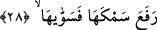
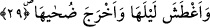
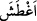
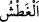

edilip delil getirmekten âciz bırakılıyorlar: Ey beyinsizler! Bu zor şeye gücü yetenin
nasıl olur da sizi yeniden diriltmeye ve mahşerde toplamaya gücü yetmez. Halbuki bu
daha kolaydır. İâde sûretiyle sizin yaratılışınız Allah’ın kolayca güç yetireceği bir
şeydir. Bunu nasıl inkâr edebiliyorsunuz?
“Ki onu (Allah) binâ etti.” Âyetteki “Allah binâ etti” cümlesi az önce geçen, “yoksa
gökyüzünü yaratmak mı?” ifâdesinden anlaşılan yaratmanın nasıllığını açıklama ve bir
başlangıç cümlesidir. Bu açıklamamıza göre yukardaki cümle, “emi’s-semau/gökyüzünü
yaratmak mı?” ifâdesinde bitmekte ve “benâha/onu Allah bina etti” cümlesiyle söze
yeniden başlanmaktadır.
Bu âyette “binâ” kelimesi “tavan” yerinde kullanılmıştır. Çünkü gökyüzü bizim
üzerimize yükseltilmiş tavandır. “Bina etme” fiilinin burada binanın üst katları ve
yukarları için değil de alt kesimleri için kullanılması bir nükteye işâret etmek içindir. O
nükte şudur: Gökyüzü her ne kadar üzerimizde kurulmuş bir tavan ise de bozukluktan ve
çatlaklıktan uzak olması açısından bir bina gibidir. Zira bina tavana oranla çatlaklıktan
ve bozukluktan daha uzaktır.
28. Onu yükseltip düzene koydu.
Bu cümle, yukarda sözü edilen “bina etme” fiilini beyân edici bir cümledir. Buna göre
âyet-i kerimenin mânâsını açacak olursak şöyle deriz: Allah göğün yerden yüksekliğini
ve zirveye doğru uzama mesâfesini yüksek ve uzak kıldı. Bu mesâfeyi beşyüz yıllık
yürüyüş mesâfesi yaptı. Bu anlamı âyette geçen “semk” kelimesinden çıkarıyoruz.
Çünkü herhangi bir şeyin uzunluğuna ölçüsü alınırken eğer bu altından üstüne doğru
alınırsa bunun adına “semk/yükseklik” denilir. Bu mesâfe yukardan aşağıya doğru
alındığında ise buna “umk/derinlik” denilir.
Bazı âlimlere göre âyetteki “semk” kelimesinin mânâsı; gökyüzünün bizden taraftaki
alt yüzeyiyle üst tarafına gelen üst yüzeyi arasındaki yüksekliktir. Buna göre âyette
kasdedilen göğün kalınlığı ve yoğunluğudur. İşte bu aynı zamanda yukarda sözü edilen
yürüyüş mesâfesi miktarıdır.
29. Gecesini kararttı, gündüzünü ağarttı.
“Gecesini kararttı” Buradaki “el-ğatş” kelimesinin anlamı “
/karanlık”tır. Rağıb
Isfahânî’niye göre kelimenin aslı “/
el-ağtaş” kökündendir. Manası ise; gözü